Dress Up reports · ^du_report(17) · 2026-10-24 · about Messed Up Dress Up, a game made with M and N · ^ticket(593)
GAME SCRIPTS
PLAYER'S GUIDE

Matthew, 2026-10-24: “explaining the new game script feature, in the spirit of a 1980s or 1990s game manual, with screenshots … we want to show what log events look like, and how to use them to ‘debug’ the game script”; “the report/manual for game scripts should show examples of erroneous scripts, and how to check the errors and fix them”; and “use this report to list the full feature set, to track it”.
2 · GETTING STARTED
3 · THE SCRIPT PANEL
4 · A WALK THROUGH THE PIT ROOM
5 · WHAT A RULE SAYS: THE SHAPE OF Cmd
6 · THE EVENT LOG 🪵
7 · DEBUGGING WITH THE LOG
8 · TROUBLESHOOTING: BROKEN SCRIPTS
9 · WHAT A SCRIPT COSTS 🔬
10 · BEHIND THE SCENES: GAME EVENTS
11 · BEHIND THE SCENES: THE GAME'S STATE
12 · QUICK REFERENCE: EVERY FEATURE
13 · ABOUT THIS GUIDE
14 · PRINT IT: THE ZINE (PDF) 🖨️
1WHAT ARE GAME SCRIPTS?
Some rooms in Messed Up Dress Up have rules. Pull a red lever in the trap room and a pit opens or shuts. Pull a blue lever and a boulder drops into a pit, or is lifted out. Pull the lever in a tree house and its trap door swings. Walk out of a square and the world decides where you arrive.
Every rule is a small program, a game script. The game hands it what it needs to know, the globals (which levers are up, which pits are open, which square of the world the friend is in), and an event (“the left red lever was pulled”). The script answers with commands (“flip the left lever; open pit 0”). The game carries them out, with the sounds and animations you know.
The three languages:
- JS: the game's own JavaScript, shown read-only, exactly as the game runs it.
- Hazel: a language with a type checker that reads your rule as you write it, and still runs a rule with mistakes in it.
- 🍄 Fumola: a language in the style of Motoko, running in the browser as WebAssembly.
2GETTING STARTED
- Open the side panel and choose the 📜 Scripting tab.
- At the top, in ⚙️ script editor settings, the all row picks one language for every room: JS Hazel 🍄 Fumola. Each room's own box has the same three chips, to choose room by room.
- Walk into the trap room and pull a lever. The rule in the language you chose decides what happens.
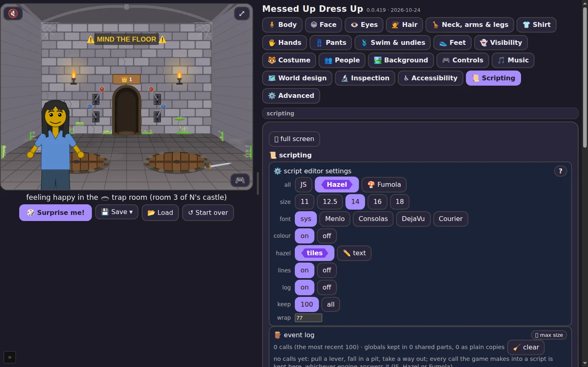
3THE SCRIPT PANEL
Settings
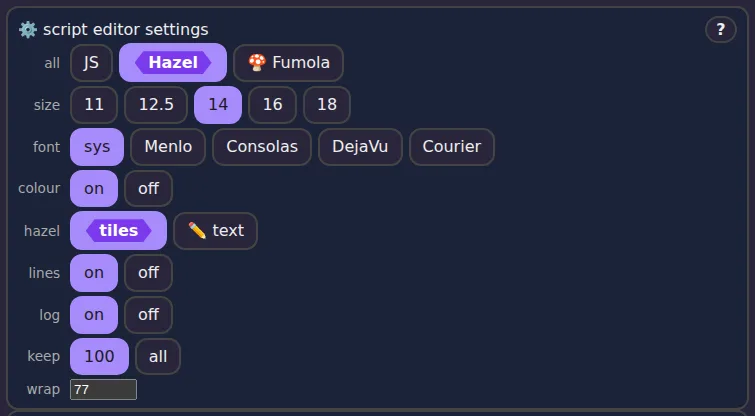
⛶ Max size and the outline
Every box has a ⛶ max size button. It opens the box across the screen, with an outline on the left: every box, and in each its types (with their kinds and how many cases) and its functions (with their types, as Hazel works them out). Click a line in the outline and the box goes to that definition and selects it. Drag the bar between the two sides to make the outline wider or narrower.
Next to ✖ back to game, the 🎮 show game viewport chip puts the game itself at the top of the outline, so you can play while reading the rules and the log.
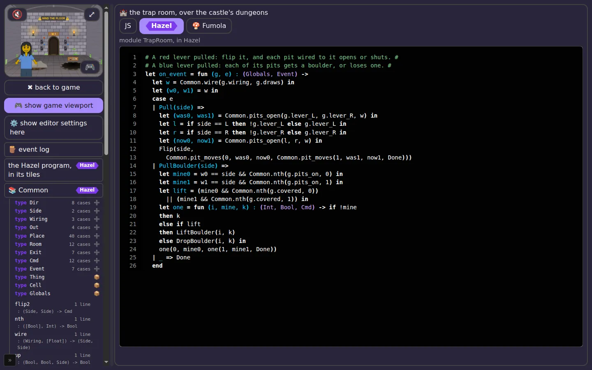
Hazel's tiles
Hazel boxes show the rule as Hazel's own tiles, the real Hazel editor, in the page's colours. Type in them and the game uses your change about half a second after you stop. Right-click a name for Goto definition (or press F12): it finds the definition even in another box, in Common, or among the types at the program's start. Prefer plain text? Choose hazel: ✏️ text in the settings.
4A WALK THROUGH THE PIT ROOM
The trap room has two pits and four levers. The two red levers open and shut the pits; which lever works which pit depends on the room's wiring: normal, reversed, or at random. The two blue levers drop a boulder into each pit the lever's side works, or lift the boulders out if one is there.
Here is the red lever's part of the rule, in Hazel:
| Pull(side) => let (was0, was1) = Common.pits_open(g.lever_L, g.lever_R, w) in let l = if side == L then !g.lever_L else g.lever_L in let r = if side == R then !g.lever_R else g.lever_R in let (now0, now1) = Common.pits_open(l, r, w) in Flip(side, Common.pit_moves(0, was0, now0, Common.pit_moves(1, was1, now1, Done)))
Read it line by line: which pits are open now; the levers after this pull; which pits are open after it; then the answer, flip the lever that was pulled and move each pit whose state changed. Common.pits_open and Common.pit_moves are helpers in the Common box, shared by every room.
5WHAT A RULE SAYS: THE SHAPE OF Cmd
Every rule is one function, on_event. It takes two things, the globals g and the event e, and gives back one thing, a Cmd: what the rule wants the game to do. It changes nothing itself. It only answers, and the game carries the answer out.
# takes the globals and the event, gives back a Cmd # let on_event = fun (g, e) : (Globals, Event) -> ...
A list of things to do
A Cmd is a list of commands, one after another. Each command's last part is the rest of the list, and the list ends with Done:
# do nothing #
Done
# flip the left lever #
Flip(L, Done)
# flip it, then open pit 0 #
Flip(L, SetPit(0, true, Done))
# say it, wait half a second, then flip #
Say("Ha!", Wait(500, Flip(L, Done)))
Read it from the outside in: the first command is the outermost one. The game does them in that order, the first command first.
Every command
| command | where | what the game does | the field of the globals it sets |
|---|---|---|---|
Done | every room | the end of the list | — |
Flip(side, rest) | trap room | flip the red lever on that side | lever_L or lever_R |
SetPit(i, open, rest) | trap room | swing pit i's lid open or shut | none: a pit follows its lever |
DropBoulder(i, rest) | trap room | drop a boulder into pit i | covered[i] becomes true |
LiftBoulder(i, rest) | trap room | lift pit i's boulder out | covered[i] becomes false |
SetHatch(n, shut, rest) | tree houses | shut or open tree house n's trap door | hatch |
OpenDoor(at, open, rest) | any square | open or shut the placed trap door at at | that thing's open |
DropRock(at, down, rest) | any square | drop or lift the rock over the trap door at at | that thing's boulder |
GoSquare(col, row, side, rest) | the world | walk to that square, coming in from side | at_col, at_row |
GoRoom(r, rest) | the castle | go to room r (0: out of the castle; below 0: nowhere) | none: the room is not in the globals |
Say(text, rest) | every room | show a few words over the picture | none |
Wait(ms, rest) | every room | wait ms milliseconds, then the rest | none |
A room only knows its own commands. Give the trap room a GoSquare and the list stops there: the log line says ⚠️ the room does not know it (chapter 8).
Building one: start with Done, wrap commands around it
Since each command holds the rest, you build a Cmd from the end. Many helpers take the rest as their last argument, called k, and either wrap a command around it or hand it back unchanged. Common.pit_moves is one:
# a pit that changed from was to now: SetPit, else nothing # let pit_moves = fun (i, was, now, k) : (Int, Bool, Bool, Cmd) -> if was == now then k else SetPit(i, now, k)
So the red lever's answer in chapter 4, Flip(side, Common.pit_moves(0, …, Common.pit_moves(1, …, Done))), is a flip followed by zero, one or two SetPits, whichever pits changed. To add a command to any answer, wrap it around the rest: Say("Watch out!", Flip(side, …)).
Your answer in the log
Because a Cmd says what should change, the event log reads it as a change to the globals: each command sets its field, as in the table. That is the first step of “what it changed”, pre event ⟶ post rule. Each change's field of the globals is a coloured chip of its own. The commands with no field of their own in the globals (SetPit, Say, Wait, GoRoom) sit beside the changes, with no field chip: a pit's lid follows its lever, so SetPit only agrees with the Flip that is a real change. Everything else the game does while carrying the event out, which no command asked for, is the second step, post rule ⟶ post event (chapter 6).
6THE EVENT LOG 🪵
Every time the game calls into a script, whichever language answers, the call goes into the event log, newest first, up to the last 100 (or all of them: keep: all). A line says:
- its number and the time, to the millisecond;
- which language answered: JS, Hazel or Fumola;
- the call and its event, as in
TrapRoom.on_event(Pull("L")); - how long it took in all (and how much of it was compiling the program, the first time);
- how much of the globals it changed.
Open a line to see the event, the rule's answer just under it, then, in the box, what changed, and, under one more fold, the globals in full, side by side, with every changed field marked.
Each call keeps three snapshots of the globals: pre event, as the rule gets them; post rule, the same with the rule's answer applied, each command setting its field (chapter 5); post event, once the game has finished carrying the event out. So “what it changed” comes in two steps. pre event ⟶ post rule is what the rule's answer says to change: for the red lever, the lever it flips; for a way out, the square it walks to. post rule ⟶ post event is what the game engine did beyond that, which no command asked for: a placed lever turning over, a boulder lying where it landed, and anything that came out otherwise than the answer said (a walk cut short shows the square changing back). For the game's own JS, which writes the globals itself, the first step is what its handler wrote. A step that changed nothing says so with a small no change chip. Under the two steps, over at says how long after the call the event was over, and time how long the rule and the whole call took. The changes are chips: a field, =, what it was, ⟶, what it is; the newest few are on the line itself too, to skim the log without opening it.
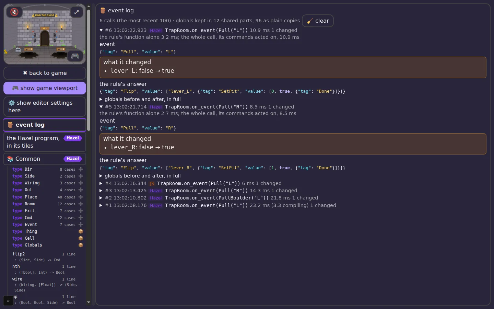
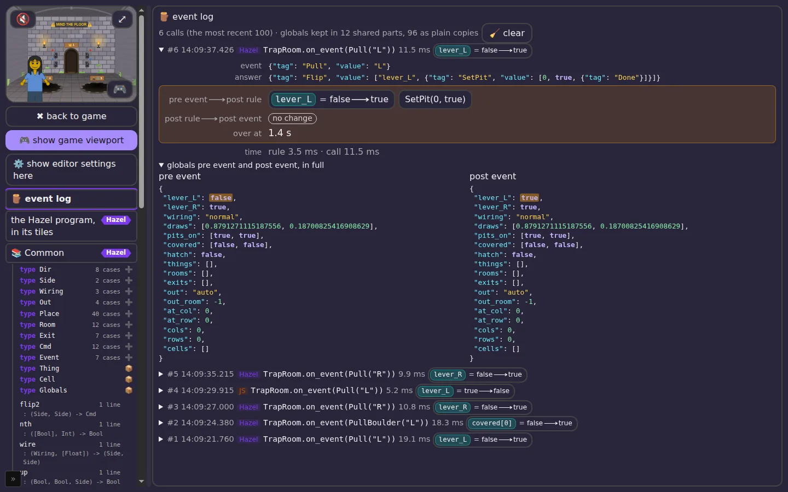
The log of the run behind these pictures:
#6 HAZEL TrapRoom.on_event(Pull("L")) 11.5 ms · handler: lever_L = false ⟶ true · game (over at 1.4 s): nothing
#5 HAZEL TrapRoom.on_event(Pull("R")) 9.9 ms · handler: lever_R = false ⟶ true · game (over at 1.4 s): nothing
#4 JS TrapRoom.on_event(Pull("L")) 5.2 ms · handler: lever_L = true ⟶ false · game (over at 1.4 s): nothing
#3 HAZEL TrapRoom.on_event(Pull("R")) 10.8 ms · handler: lever_R = false ⟶ true · game (over at 1.4 s): nothing
#2 HAZEL TrapRoom.on_event(PullBoulder("L")) 18.3 ms · handler: covered[0] = false ⟶ true · game (over at 1.4 s): nothing
#1 HAZEL TrapRoom.on_event(Pull("L")) 19.1 ms · handler: lever_L = false ⟶ true · game (over at 1.4 s): nothing
7DEBUGGING WITH THE LOG
When a lever does something you didn't expect, work through it like this:
- Do it once. Pull the lever a single time, so the newest entry is the one you care about.
- Which language answered? If it says JS where you expected Hazel or Fumola, your rule didn't answer. Look for ⚠️ or ⛔ on the same line (chapter 8).
- What came in? Open the entry and read the event and the globals before. Was the lever really up? Was the wiring what you thought?
- What did the rule say? The rule's answer is exactly what it returned:
Flip(L, SetPit(0, true, Done)), as data. - What changed? If the answer is right but what it changed isn't, the game carried a command out differently than you meant. If the answer itself is wrong, the mistake is in the rule.
- Compare with JS. Switch that room to JS, pull the lever again, and compare the two entries side by side.
8TROUBLESHOOTING: BROKEN SCRIPTS
Four ways a script goes wrong, what each one looks like, and how to fix it. Every example was broken on purpose, in the run behind this guide.
7.1 A type error (Hazel)
Hazel reads the whole program before anything runs. Change the red lever's answer from Flip(side, …) to Flip(3, …): a lever is a Side (L or R), not a number.
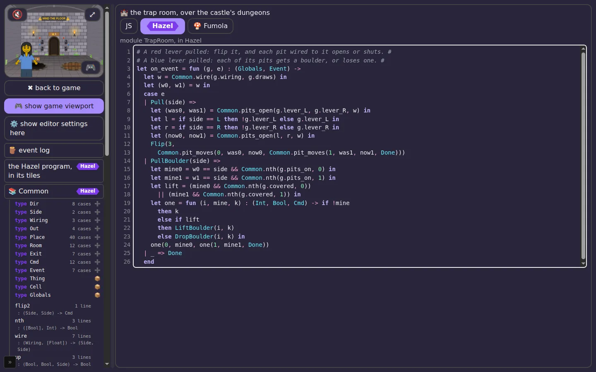
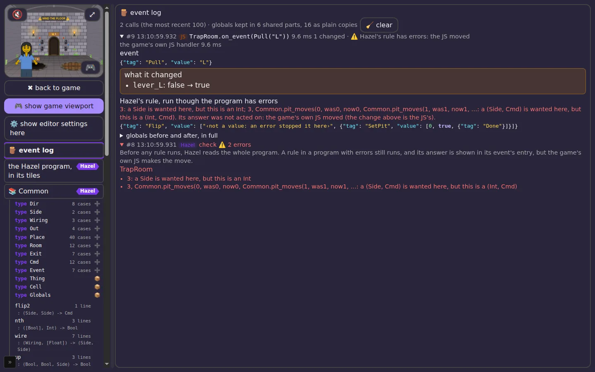
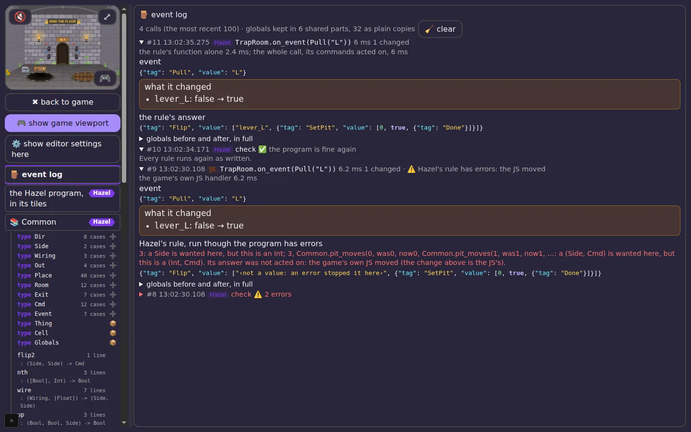
7.2 A hole to fill (Hazel)
Leave part of a rule unwritten, a ? or an if without its else, and Hazel counts it: “1 hole to fill”, or “1 bracket or keyword without its partner”. It appears just like a type error: in the box, in the outline, and in a check entry. The game's JS moves until the rule is finished.
7.3 A command the room doesn't know
Every room carries out only its own commands. The trap room knows Flip, SetPit, DropBoulder and LiftBoulder; it doesn't know GoSquare, which belongs to the world. This rule type-checks, since GoSquare is a real command, but the room can't carry it out:
let on_event = fun (g, e) : (Globals, Event) -> GoSquare(0, 0, N, Flip(L, Done))
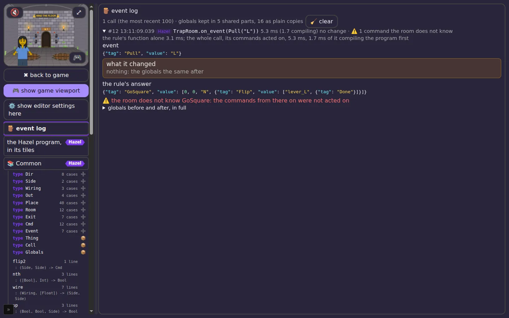
7.4 A rule that stops (Fumola)
Some mistakes only show up when the rule runs. In Fumola, reading past the end of a list stops the rule:
public func on_event(g : Common.Globals, e : Common.Event) : Common.Cmd { let z = [1, 2][5];
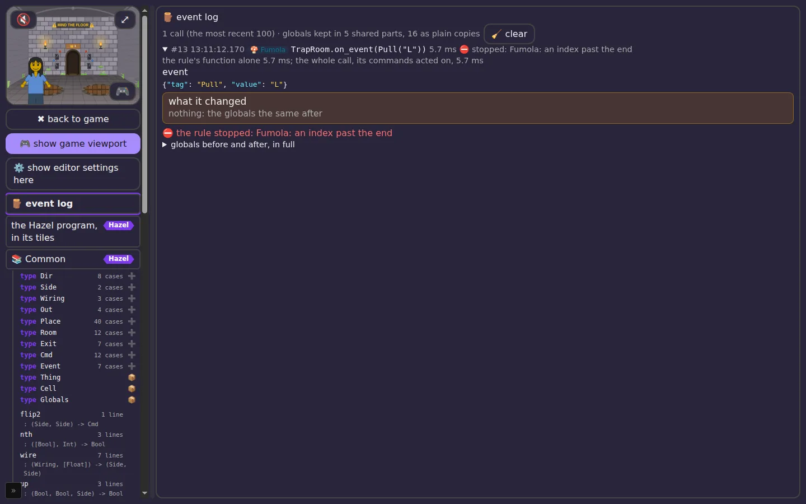
9WHAT A SCRIPT COSTS 🔬
In the ⚙️ Advanced tab, under 🧪 tests and timing, 🔬 the scripts' cost shows, for every kind of event the scripts answer, how long it takes in each language: the whole event (from the game's call to the last command carried out), and for Hazel and Fumola the rule alone. It also shows each language's set-up time. A frame is 16.7 ms; a rule that takes longer than that can make the game stutter.
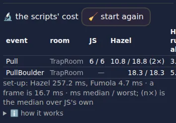
10BEHIND THE SCENES: GAME EVENTS
Scripts answer only some of what happens in the game. Every way of moving, every arrow, door, pit and ladder, ends in one place in the game's code, enterScene. It tries a passage, a world way, a rope bridge, a ladder, then asks the scripts (scriptGo), and otherwise takes the door's own destination, fixed when the scene was drawn. Here is every kind of game event, what the game reads to decide what happens next, and whether a script decides it today.
Moving: 4 of 16 kinds go through a script
| the event | what decides where it leads | who decides |
|---|---|---|
| Arrow or edge-walk out of an outdoor square (a way linked to another world is not scripted) | worldTarget: the square's links (another world), else worldMeets, the neighbour in state.world.cells with a way back | World · Way(d) |
| Letting go of a sign board | signWays, then the same route as an arrow | World · Way(d) |
| Falling into a trap-room pit (walking on, landing a jump, a lid opening underneath) | pitAt; its room from the castle's dungeon1/dungeon2; only an open, uncovered pit | Castle · FallPit(0 or 1) |
| A dungeon's ladder up (its way out) | wayOutOf: auto is the trap room if there is one, else 0 or 1 | Castle · WayOut(n) |
| Castle room doors, signs, arches and far-wall stairs (only a ladder room's way out reaches a script) | castleWays and roomExits: the castle's rooms, each hall's out, back, far and doors, ROOM_KINDS' exits | THE GAME'S JS |
| Toward-us arrows inside (living room, huts, tree top, tree room) | insideWays: the place's own back key (livingOut, treetopBack, treeBackN, …) | THE GAME'S JS |
| The castle gate | a fixed door: room 1 | THE GAME'S JS |
| Tree-house doors, hatches, ladders, bridges, windows | houseLinks, treeWalks, bridgeOn; a shut hatch is no door | THE GAME'S JS |
| Caves and the waterfall | fixed doors | THE GAME'S JS |
| Campsite tents | fixed doors (data-tent) | THE GAME'S JS |
| Huts, the witch's house, the clearing, the living room's door | fixed doors | THE GAME'S JS |
| Pictures and windows (fly-in) | the picture's own view | THE GAME'S JS |
| The imagination map's pictures | one door per kind of place | THE GAME'S JS |
| Cave passages placed by the player | passageWalk: the passage's twin, in this world or another (worldById) | THE GAME'S JS |
| The back chip | the trip so far (trips) | THE GAME'S JS |
| Design-panel jumps (a place chosen, a world switched, a person switched) | the panel's choice | THE GAME'S JS |
Doing: 4 of 9 kinds go through a script
| the event | what it reads | who decides |
|---|---|---|
| A placed 🎚️ lever | the square's things: the lever's works, does, and each door's open and boulder | Square · PullThing(i) |
| The trap room's red lever | trapState: the wiring, the pits open | TrapRoom · Pull(side) |
| The trap room's blue lever | trapState: the wiring, the pits on, covered | TrapRoom · PullBoulder(side) |
| A tree room's or the tree top's hatch lever | hatchShutN / hatchShutTop | TreeRoom · PullHatch(house) |
| Sitting or lying down | the seats here (SEATS) | THE GAME'S JS |
| Climbing a ladder | the ladders here | THE GAME'S JS |
| Walking into a door to push it | the door's glow (ends at the door's own way) | THE GAME'S JS |
| Jumping, diving, swimming | the water's depth, the pits under the landing | THE GAME'S JS |
| Click to walk | the path planned round pits and solids | THE GAME'S JS |
11BEHIND THE SCENES: THE GAME'S STATE
The game keeps everything it knows in one object, state: 23 parts, about 82 KB written out as JSON (a long-played save). A script sees a small slice of it, Globals: 17 fields, the slice its room needs, built fresh for each call.
The game's state
| part | bytes as JSON |
|---|---|
background | 47,733 |
scripts | 19,123 |
world | 8,713 |
costume | 3,480 |
body | 1,023 |
face | 642 |
access | 534 |
hands | 206 |
rightHand | 163 |
hair | 146 |
The background is the world itself: 1,994 settings in 186 families, most of them per castle room (castleHall 390, castlePit 201, castleCat 192, castleThrone 180, castleRoom 79, castleLever 79, castleBoulder 79, castleBones 78, castleHorse 60, castleOut 39, castleFar 39, castleBack 39, …). world is the map: 31 squares, each with its kind (one of 40), its ways, and its things (of 44 kinds); the castles have 12 kinds of room. The rest is the friend (face, body, clothes, costume), the scripts themselves, and the player's settings.
What a script sees: Globals
| field | for | where the game keeps it |
|---|---|---|
lever_L, lever_R | TrapRoom | the room's two red levers: castleLeverL_/R_ keys, one per room and castle (leverDown) |
wiring | TrapRoom | castleLeverWire#: normal, reversed or random |
draws | TrapRoom | two numbers from the room's seed (seeded(castleLeverSeed#)), for a random wiring: the rule has no randomness of its own |
pits_on, covered | TrapRoom | trapState: which pits are open, which hold a boulder (castlePitOn#, castleBoulder…) |
hatch | TreeRoom | the house's hatch shut (hatchShutN, hatchShutTop) |
things | Square | the square's levers and trap doors only, 8 fields each (at, uid, kind, on, works, does, open, boulder) |
rooms, exits | Castle | castleOf(B).rooms, and each one's exits from ROOM_KINDS |
out, out_room | Castle | the hall's way out setting (auto, out, none, or a room) |
at_col, at_row, cols, rows, cells | World | state.world: where the friend is, the map's size, each square's col, row, kind and ways (not its things or links) |
12QUICK REFERENCE: EVERY FEATURE
The full feature set of the 📜 Scripting panel, and where each feature stands: 20 done, 7 done but not yet seen by Matthew, 3 on a branch, 3 not yet built. This table is kept up to date as the work goes on.
| area | feature | status | where |
|---|---|---|---|
| panel | 📜 Scripting tab: a box for each room with a rule, and 📚 Common for the helpers | DONE | 482 |
| panel | Three languages per room (JS, Hazel, 🍄 Fumola), and an all chip for every room | DONE | 566 |
| panel | JS shown read-only, as the game runs it | DONE | 566 |
| panel | Fumola rules with Motoko-style type annotations, from Hazel's types | DONE | 577 |
| settings | ⚙️ size, font, colours, Hazel tiles or text, line numbers, wrap | DONE | 580 |
| settings | ⚙️ the event log on or off, and keep 100 or all | DONE | 592 |
| editing | Syntax colours and line numbers in text boxes | DONE | 581 |
| editing | Long lines broken to the box and the wrap setting, live; widening gives them back | TO CHECK | 578 |
| tiles | Hazel's tiles in every Hazel box, editable, edits to the game | TO CHECK | 578 |
| tiles | Tiles in the page's theme (dark and high contrast), font, size and line numbers | TO CHECK | 578 |
| tiles | Goto definition (F12, right-click) across boxes, Common and the types | TO CHECK | 586 |
| tiles | Right-click menu opens downward, the frame grows to it | TO CHECK | 578 |
| ⛶ view | Max size, with the outline of every box: types with kinds and cases, functions with types | DONE | 577 |
| ⛶ view | Clicking the outline selects the definition (tiles, text or JS): 145 of 145 items checked | DONE | 587 |
| ⛶ view | Draggable divider; settings shown on request | DONE | 577 |
| ⛶ view | 🎮 game viewport at the top of the outline; ✖ back to game | TO CHECK | — |
| ⛶ view | The outline's Hazel types from Hazel itself (Hazel.outlineProgram) | ON A BRANCH | hazel lib-outline-587 |
| ⛶ view | The outline's Fumola definitions from Fumola itself (fumola_defs), exact ranges | ON A BRANCH | fumola wasm-defs-589 |
| event log | 🪵 every call from the game into a script, whichever language answers | DONE | 592 |
| event log | Entry: language, time, total and rule's own time, compile apart, event, globals before, with the answer applied, after the event | DONE | 592 |
| event log | What it changed; the rule's answer; globals side by side, changes marked, JSON coloured | DONE | 592 |
| event log | Three snapshots, pre event, post rule, post event: what the rule's answer (its Cmd) says to change, then what the game engine did beyond it, post event when the game says the event is over; an empty step a no change chip | DONE | 592, 597 |
| event log | Globals stored shared (hash-consed), so a long log stays small | DONE | 592 |
| errors | Hazel's type errors in the room's box, ⚠️ in the outline, a check entry in the log | DONE | 594 |
| errors | A Hazel rule with errors still runs, its answer in the log; the JS moves meanwhile | DONE | 594 |
| errors | A command the room does not know; a rule that stops: in the entry | DONE | 594 |
| errors | Fumola's type errors (Fumola does not check types yet) | NOT YET | — |
| errors | Error marks inside Fumola's boxes, at the line | NOT YET | 589 |
| measuring | 🔬 the scripts' cost in ⚙️ Advanced: per event, per language, against JS | TO CHECK | 568 |
| measuring | Frame-rate standard per language in CI (55 fps): all pass | DONE | 569 |
| measuring | Big maps: the world's rule in Hazel is O(N) a call | NOT YET | 540 |
| correctness | CI: JS = Hazel = Fumola on every push, 32,761 + 20,649 comparisons | DONE | 567 |
| correctness | Hazel's library tests seeded from the game's rules (144 cases) | ON A BRANCH | hazel js-library-591 |
13ABOUT THIS GUIDE
Every picture is of Messed Up Dress Up 0.0.419, as released, and every quoted entry and message comes from the same run of tools/checks/manual593.mjs (kids-choice-games) on GitHub's computers: branch diag-593, the game at 8aadf44, run 40101004886, dark mode, 1440 × 900. The check sets each scene up, breaks the rules on purpose, and takes the picture; nothing was retouched. drivers/build.py draws this page from data/texts.json and data/features.json.
Related: Hazel reports, where the scripts' speed and the three-way checks are measured; hazelgrove/hazel #2711 (Hazel as a JS library); Adapton/fumola.